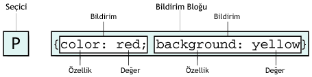

Microsoft Internet Explorerdan yine kritik bir açık. "Bir saldırganın Microsoft Internet Explorer çalışan bir bilgisayarın güvenliğini aşmasına ve denetimini ele geçirmesine olanak verebilecek güvenlik sorunları saptanmıştır. Microsoft'un bu güncelleştirmesini yükleyerek bilgisayarınızı koruyabilirsiniz. Bu öğeyi yükledikten sonra bilgisayarınızı yeniden başlatmanız gerekebilir." - Microsoft Türkiye sorunun kaynağının createTextRange() DHTML metodu olduğu belirtiliyor ...
devamını okuTYPO3 4.0 Çıktı
Typo3'ün 4.0 versiyonu çıktı. Typo3 nedir? Typo3 ücretsiz bir CMS (Content Management System/ İçerik Yönetim Sistemi)'idir. Typo3 ile web sayfaları oluştura bilrisiniz. Ayrıca her türlü web sayfası yönetimi işlerini kolayca yapabilirsiniz. Ayrıntılı bilgi [http://typo3.org/]]
]: http://typo3.org/ "TYP03"
devamını okuCEVDET PAŞA'NIN TOPLUM ve DEVLET GÖRÜŞÜ - Ümit Meriç
devamını oku Her
sosyal olay bir başka sosyal olayın eseri olduğuna göre. Türkiye'deki
sosyolojik çalışmaları.Türk tarihine dayanmak zorundadır. Bir
Türkiye sosyolojisi kurulurken dünkü toplum yapımızı tanımak için
elimizdeki başlıca kaynak Osmanlı tarihçilerinin eserleridir. Cevdet
Paşa'nın toplum ve devletle ilgili görüşlerini tesbit etmek gayesini
güden bu araştırma. tarihle sosyolojinin kavuşma ...
Her
sosyal olay bir başka sosyal olayın eseri olduğuna göre. Türkiye'deki
sosyolojik çalışmaları.Türk tarihine dayanmak zorundadır. Bir
Türkiye sosyolojisi kurulurken dünkü toplum yapımızı tanımak için
elimizdeki başlıca kaynak Osmanlı tarihçilerinin eserleridir. Cevdet
Paşa'nın toplum ve devletle ilgili görüşlerini tesbit etmek gayesini
güden bu araştırma. tarihle sosyolojinin kavuşma ...Opera 9 Çıktı
Opera 9 yeni ve güzel özellikleri ile çıktı. Daha önce betasında bahsettiğimiz gibi gayet güzel özelliklerle geliyor. Web tarayıcıları arasındaki çekişmeyi kızıştıracak bir gelişme. http://www.opera.com/
devamını okuBatının Politik Ahlaksızlığı - Ahmet Rıza Bey
devamını oku Ahmet
Rıza Bey tam bir devlet adamı ve tam bir entellektüeldir. Fransızca
yazdığı bu eser bu iki sıfatının ortak meyvesidir. Bu eser, hem dünyaya
karşı yurtsever bir feryat, hem bir dünya tarihi eskizi, hem
medeniyetler çatışmasında felsefi bir tespit, aynı zamanda bir
ansiklopedik kaynaktır. Fransızca yazılmış, sonradan Türkçe'ye
çevrilmiştir.
Ahmet
Rıza Bey tam bir devlet adamı ve tam bir entellektüeldir. Fransızca
yazdığı bu eser bu iki sıfatının ortak meyvesidir. Bu eser, hem dünyaya
karşı yurtsever bir feryat, hem bir dünya tarihi eskizi, hem
medeniyetler çatışmasında felsefi bir tespit, aynı zamanda bir
ansiklopedik kaynaktır. Fransızca yazılmış, sonradan Türkçe'ye
çevrilmiştir.CSS'in Yapısı
CSS'in Yapısı
CSS'in yapısı iki ana kısımdan oluşur. Seçiciler(Selector) ve Bildirim Bloğu(Declaration Block). Bildirim Bloğuda iki ye ayrılır. Özellik(Property) ve Değer(Value).

Not XML de Seçiciler HTML elementleri dışında yeni oluşturulan elementlerde olabilir.
Tüm HTML elementleri potansiyel Seçicilerdir. Seçiciler ismini de buradan alır, HTML seçilen ...
devamını okuADSL ucuzluyormu?
Türk Telekom'dan yapılan açıklmada ADSL hatlarının hızlarının arttırlması veya ucuzlatılmasının düşünüldüğü berlirtildi Ayrıntı için http://www.haberx.com/n/261279/adsl-ucuzlayacak.htm
devamını okuHastalığım boyunca 3 kitap okudum
Birincisi Ahmet Refik'in Cem Suran adlı kitabı, kitap cem sultanın hayatını genel olarak sürgün hayatını anlatıyor. Bu konu hakkında bir kaç kitap daha okumak daha iyi olacaktır. İkinci kitap Seyyid Muradi Reis'in kaleminden "Kaptan Paşa'nın Seyir Defteri" adlı kitabı, Gazavat-ı Hayreddin Paşa'yı çok güzel anlatmış. Savaşlar ...
devamını okuDreamwaver 8.0.2 update ile İE deki flash sorununu halletti
http://www.adobe.com/support/dreamweaver/downloads_updaters.html Adresinden indireceğiniz Dreamweaver 8.0.2 Updater yükledikten sonra flash ekleme işleminin dremweaver ile yaptığınızda dw bu işi sizin yerinize yapıyor. Ayrıca flash ekli mevcut sayfalarınızı update i yaptıktan sonra dw açtıığnızda dw size bu sayfa için kodu düzeltip düzeltmeyeceğinizi soruyor evet ...
devamını okuCSS'e başlamak
Cascading Style Sheets (CSS) HTML 'deki bazı problemleri halletmek için ama asıl neden olarak da; web sayfası içeriği ve web sayfası görünümünü birbirinden ayırmak için oluşturulan bir standarttır. CSS 1996'da W3C tarafından duyuruldu. Son olarak CSS2.1 versiyonu işler durumdadır. CSS3.0'da çalışmaları devam etmektedir. CSS3.0 için ...
devamını oku